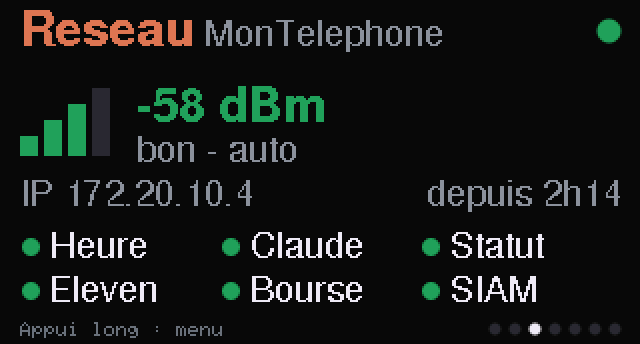
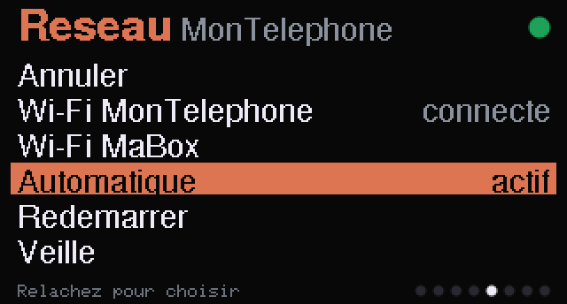
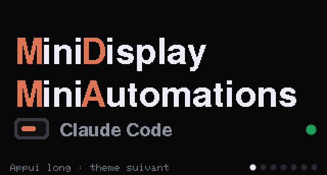
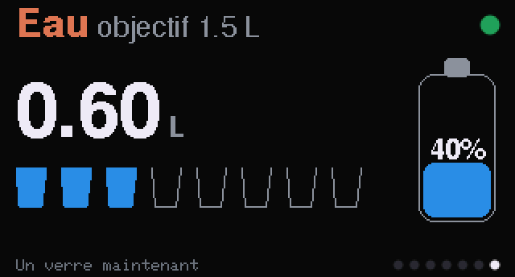
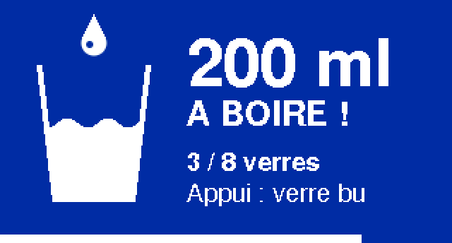

01Pourquoi une V2
La V1 repose sur un câble USB entre le PC et la carte (voir l'architecture). Elle fonctionne très bien… tant que le PC accepte les périphériques USB. Sur un poste d'entreprise, les ports USB sont souvent bloqués : la carte reçoit du courant, mais aucune donnée.
La V2 inverse donc le principe de la V1 : la carte devient autonome. Elle se connecte en Wi-Fi, appelle elle-même les API, et l'USB ne sert plus qu'à l'alimenter.
La carte se connecte au partage de connexion d'un téléphone, pas au Wi-Fi du bureau. Elle passe par la 4G/5G personnelle et n'apparaît jamais sur le réseau de l'entreprise. Par prudence, on l'alimente avec un chargeur USB plutôt qu'avec le PC : un périphérique série refusé peut générer une alerte de sécurité.
La V1 reste disponible : elle est marquée par le repère Git v1-usb et son code est toujours dans bridge/ et firmware/claude_usage/.
02V1 et V2 côte à côte
| V1 · pont USB | V2 · autonome | |
|---|---|---|
| Qui appelle les API | Le PC (script PowerShell) | La carte |
| Liaison | USB série, une trame toutes les 30 s | Wi-Fi, plusieurs réseaux possibles |
| PC nécessaire | Oui, allumé avec le pont lancé | Non, un simple chargeur suffit |
| Jeton Claude | Celui de Claude Code sur le PC | Une connexion réservée à la carte, renouvelée par elle |
| Secrets | Restent sur le PC | Stockés dans la Flash de la carte |
| Heure | Envoyée par le PC | Internet (NTP), heure d'été comprise |
| 5ᵉ vue | Ressources du PC (CPU, RAM, GPU) | Réseau : signal Wi-Fi et état des sources |
| Changer un réglage | Éditer un fichier sur le PC | Éditer secrets.h et reflasher |
| Firmware | firmware/claude_usage/ | firmware/mdma_autonome/ |
Tout l'affichage est commun : thèmes, jauges, Pomodoro, bourse, couleurs. Seule la manière d'obtenir les données change, ce qui a permis de reprendre le firmware de la V1 presque tel quel.
03La nouvelle chaîne
Le firmware tient en deux fichiers principaux. mdma_autonome.ino contient l'affichage repris de la V1, le bouton et le menu. reseau.ino contient tout ce qui touche au réseau.
04La tâche réseau
Une connexion HTTPS prend 1 à 3 secondes sur l'ESP32-C6, l'essentiel pour la poignée de main TLS. Si loop() faisait ces appels, l'écran et le bouton seraient figés pendant ce temps. Le réseau tourne donc dans une tâche FreeRTOS séparée, de même priorité que loop() : le processeur, qui n'a qu'un cœur, alterne entre les deux.
// Un relevé par passage au plus : un choix fait dans le menu est pris en compte vite
static void fetchOne() {
if (due(nextStatus)) fetchStatus();
else if (srcs[SRC_CLAUDE].on && due(nextQuota)) fetchQuota();
else if (srcs[SRC_ELEVEN].on && due(nextEleven)) fetchEleven();
// ...
else if (srcs[SRC_MARKET].on && due(nextMarket)) fetchMarket();
}
static void netTask(void *) {
for (;;) {
wifiTick();
if (net.up && timeOk() && !sleeping) fetchOne();
vTaskDelay(pdMS_TO_TICKS(250));
}
}Les deux tâches partagent les mêmes données (quota, cours, état du Wi-Fi). Pour éviter que l'écran se dessine pendant qu'une valeur est à moitié écrite, chaque accès passe par un verrou récursif. Le relevé se fait sans le verrou, et seule la copie du résultat le prend, ce qui ne dure que quelques microsecondes :
static SemaphoreHandle_t gLock; // verrou récursif partagé avec la tâche réseau
static volatile bool dirty = false; // nouvelles données : à redessiner
struct Guard {
Guard() { xSemaphoreTakeRecursive(gLock, portMAX_DELAY); }
~Guard() { xSemaphoreGiveRecursive(gLock); }
};Les rythmes sont ceux du pont de la V1, garde-fous compris :
| Source | Adresse | Rythme |
|---|---|---|
| Quota Claude | api.anthropic.com/api/oauth/usage | 5 min, puis 10, 20, 40 et 60 min après des refus 429 |
| État des services | status.claude.com/api/v2/status.json | 5 min |
| ElevenLabs | api.elevenlabs.io/v1/user/subscription | 10 min |
| Bourse | query1.finance.yahoo.com/v8/finance/chart | 1 min |
| Heure | NTP | au démarrage, puis toutes les heures |
05Le jeton Claude
C'est le point le plus délicat de la V2. La page de quota exige un jeton OAuth d'abonnement Claude, avec le droit user:profile. Les pistes testées :
| Piste | Résultat |
|---|---|
Clé API (sk-ant-api…) | Hors sujet : elle dépend d'un compte de facturation à l'usage, qui n'a pas de fenêtres de 5 h ni de semaine |
| Jeton du PC, recopié tel quel | Expire au bout de quelques heures |
claude setup-token (valable un an) | Refusé (403) : il n'a que le droit user:inference |
| Connexion réservée à la carte | ✔ retenue |
Le principe : on se connecte à Claude Code une fois de plus, dans un dossier de configuration séparé, et on confie cette connexion à la carte. Elle reçoit un jeton d'accès, valable environ 8 h, et un jeton de renouvellement. Quand le jeton d'accès arrive à expiration, la carte en demande un nouveau, exactement comme le fait Claude Code.
Chaque renouvellement renvoie un nouveau jeton de renouvellement et invalide l'ancien. Deux conséquences. Une seule machine doit utiliser une connexion donnée, sinon elles se déconnectent l'une l'autre : d'où une connexion séparée de celle du PC. Et la carte doit écrire le nouveau jeton en Flash immédiatement, sinon un redémarrage la ramènerait à un jeton déjà mort.
const int code = httpJson(HOSTS[h], body.c_str(), NULL, CLAUDE_UA, doc, NULL, NULL);
const char *at = doc["access_token"];
if (code == 200 && at) {
claudeAccess = at;
if (doc["refresh_token"].is<const char *>()) claudeRefresh = doc["refresh_token"].as<const char *>();
claudeExpires = time(NULL) + (doc["expires_in"] | 3600);
// L'ancien jeton de renouvellement ne vaut déjà plus rien : le nouveau est écrit tout de suite
netPrefs.putString("rt", claudeRefresh);
netPrefs.putString("at", claudeAccess);
netPrefs.putUInt("exp", claudeExpires);
return true;
}Le jeton inscrit dans secrets.h ne sert donc qu'au premier démarrage. Pour savoir s'il a changé, la carte garde en Flash une empreinte (CRC32) du dernier jeton lu dans secrets.h. Si l'empreinte diffère, c'est qu'un nouveau jeton a été fourni : il remplace celui de la Flash. Sinon, la carte garde le dernier jeton qu'elle a obtenu elle-même. Reflasher le firmware sans toucher au jeton ne casse donc rien.
Le renouvellement a lieu 10 minutes avant l'expiration, ou aussitôt si l'API répond 401. Si le serveur répond invalid_grant, la connexion est perdue pour de bon : l'écran affiche « Claude : reconnexion necessaire » et la carte cesse d'insister.
06Wi-Fi, vue Réseau et menu
Plusieurs réseaux sont déclarés dans secrets.h, par exemple le partage de connexion du téléphone puis la box de la maison. Il y a deux modes :
- Automatique : la carte essaie les réseaux dans l'ordre, 15 s chacun, et passe au suivant plus tôt si le mot de passe est refusé ou le réseau absent. Après une coupure, elle repart du premier.
- Imposé : un réseau choisi dans le menu, mémorisé en Flash. S'il reste introuvable pendant une minute, la carte repasse en automatique, pour ne jamais rester bloquée hors ligne.
La 5ᵉ vue, Réseau, remplace celle des ressources du PC. Elle affiche des barres de signal façon téléphone, la puissance en dBm, l'adresse IP, la durée de connexion et une pastille par source de données :
| Pastille | Signification |
|---|---|
| Verte | Dernier relevé réussi |
| Orange | Le dernier essai a échoué |
| Grise | Pas encore de relevé |
| Cercle vide | Source non configurée dans secrets.h |
Avec un seul bouton, le menu fonctionne à l'appui maintenu. Sur la vue Réseau, un appui long ouvre le menu, et la sélection descend d'une ligne toutes les 0,7 s tant qu'on reste appuyé. Relâcher valide la ligne surlignée. La première ligne est « Annuler », pour qu'un appui trop court ne déclenche rien. Les lignes suivantes : chaque réseau, Automatique, Redémarrer et Veille.


Le même menu sert à toutes les vues qui ont des options. Le thème, lui, ne se change plus que sur la vue Home.
| Vue | Appui long |
|---|---|
| Home | Thème suivant |
| Claude | Version 1 (jauges), 2 (gros chiffres), 3 (jauges + ElevenLabs) ou 4 (gros chiffres + ElevenLabs) |
| Réseau | Un réseau, Automatique, Redémarrer, Veille |
| Pomodoro | Recommencer |
| Action | Le cours affiché : IART par défaut, BTC, ETH (liste MARKET_SYMBOLS) |
| Eau | +1 verre, -1 verre, remise à zéro |


Rappel d'eau. Objectif 1,5 L par jour, en huit verres de 20 cl, de 9 h à 19 h : un verre toutes les 1 h 15. Le rappel ne sonne que si l'on est en retard sur ce rythme : un écran bleu passe alors par-dessus la vue en cours, avec une barre qui défile pendant la minute d'affichage, la LED clignote en bleu, et un appui note le verre. Sans réponse, le rappel s'efface au bout d'une minute et revient 20 minutes plus tard. Tout se règle dans secrets.h (WATER_GOAL_ML, WATER_GLASS_ML, WATER_FROM_H, WATER_TO_H).

La carte est alimentée par l'USB : le firmware ne peut pas la couper. La veille éteint l'écran, la LED et le Wi-Fi, et un appui la réveille. Une veille profonde est impossible ici, car le bouton BOOT (GPIO9) n'est pas une broche capable de réveiller la puce depuis ce mode.
07HTTPS et JSON
Toutes les requêtes passent par une seule fonction, httpJson, qui repose sur trois choix :
- Certificats vérifiés :
useBuiltinCACertBundle()utilise les autorités de certification intégrées au cœur ESP32 3.x. Pas desetInsecure(): les jetons ne partent que vers le bon serveur. - HTTP/1.0 : le serveur ne peut alors pas répondre en « chunked ». La réponse est lue entière, puis analysée : lue directement en flux, elle arrivait parfois tronquée.
- Filtre ArduinoJson : seuls les champs utiles sont gardés. La courbe de bourse fait près de 40 Ko en JSON, mais seuls quelques centaines d'octets restent en mémoire.
NetworkClientSecure client;
client.useBuiltinCACertBundle(); // certificats vérifiés avec les autorités usuelles
HTTPClient http;
http.useHTTP10(true); // pas de réponse « chunked »
http.begin(client, url);
...
int code = body ? http.POST((uint8_t *)body, strlen(body)) : http.GET();
const String raw = http.getString(); // corps entier d'abord
deserializeJson(doc, raw, DeserializationOption::Filter(*filter));08L'heure
Dans la V1, le PC envoyait l'heure locale toute prête. La V2 la règle par internet (NTP) dès que le Wi-Fi est connecté, avec un fuseau POSIX qui gère seul l'heure d'été :
#define TZ_INFO "CET-1CEST,M3.5.0,M10.5.0/3" // ParisPour ne rien changer au code d'affichage, la fonction localEpoch() convertit chaque heure UTC dans le même format que la V1 : des secondes depuis 1970 en « heure locale à plat », que l'écran lit avec gmtime. Les heures ISO des API (2026-10-19T23:39:59.57+00:00) sont analysées puis arrondies à la minute.
09Mise en place
- Copier le modèle :
firmware/mdma_autonome/secrets.h.exampleverssecrets.h. Ce fichier est ignoré par Git. - Déclarer les réseaux Wi-Fi (2,4 GHz). Sur iPhone, activez « Maximiser la compatibilité » dans le partage de connexion.
- Créer la connexion Claude de la carte, puis copier le champ
refreshTokende%USERPROFILE%\.claude-mdma\.credentials.jsondansCLAUDE_REFRESH_TOKEN. Ne relancez plus jamais Claude Code avec ce dossier. - Optionnel : clé ElevenLabs et symbole boursier. Une valeur vide désactive la vue.
- Compiler et téléverser avec le schéma de partitions
min_spiffs(voir ci-dessous).
$env:CLAUDE_CONFIG_DIR = "$env:USERPROFILE\.claude-mdma"
claude # connectez-vous dans le navigateur, puis tapez /exitA="$LOCALAPPDATA/arduino-cli/arduino-cli.exe"
FQBN="esp32:esp32:esp32c6:CDCOnBoot=cdc,PartitionScheme=min_spiffs"
"$A" lib install ArduinoJson
"$A" compile --jobs 2 --fqbn "$FQBN" firmware/mdma_autonome
"$A" upload --fqbn "$FQBN" -p COM3 firmware/mdma_autonomeLe journal de la carte (115 200 bauds, en USB) indique chaque étape : réseau essayé, connexion, heure réglée, jeton renouvelé, relevés.
10Pièges rencontrés
| Symptôme | Cause | Solution |
|---|---|---|
| Le programme ne tient pas en Flash | Wi-Fi + TLS + JSON : 1,33 Mo, pour 1,2 Mo dans le schéma par défaut | Schéma min_spiffs : 1,9 Mo pour le programme, et la mise à jour par Wi-Fi reste possible plus tard |
| Une requête Supabase « échoue » alors qu'elle a réussi | Avec Prefer: count=exact et limit=1, PostgREST répond 206 (contenu partiel), pas 200 | Accepter 200 et 206 |
| Le téléphone n'est pas vu | L'ESP32-C6 ne capte que le 2,4 GHz | Forcer la bande 2,4 GHz sur le partage de connexion |
| Claude Code déconnecté sur le PC | Le PC et la carte partagent la même connexion et se volent le jeton | Une connexion séparée, réservée à la carte |
| Le cours BTC reste sur « relevé en cours » | Réponse Yahoo lue en flux TLS, coupée en route : IncompleteInput | Lire le corps entier avec getString(), puis l'analyser |
| Le PC rame pendant la compilation | arduino-cli utilise tous les cœurs | --jobs 2 |
11Sécurité
Contrairement à la V1, la carte contient maintenant des secrets : mots de passe Wi-Fi, jeton Claude, clés d'API. N'importe qui peut lire toute la Flash d'une carte branchée en USB. Pour limiter les dégâts en cas de perte :
- des clés aux droits minimaux, par exemple ElevenLabs avec la seule permission « Utilisateur » en lecture ;
- une connexion Claude dédiée, qui peut être révoquée sans toucher à celle du PC ;
secrets.hdans le.gitignore, avec seulementsecrets.h.examplepublié dans le dépôt.
Le chiffrement de la Flash de l'ESP32 protégerait mieux, mais il grave des eFuses de façon irréversible. Il n'est pas activé dans ce projet.